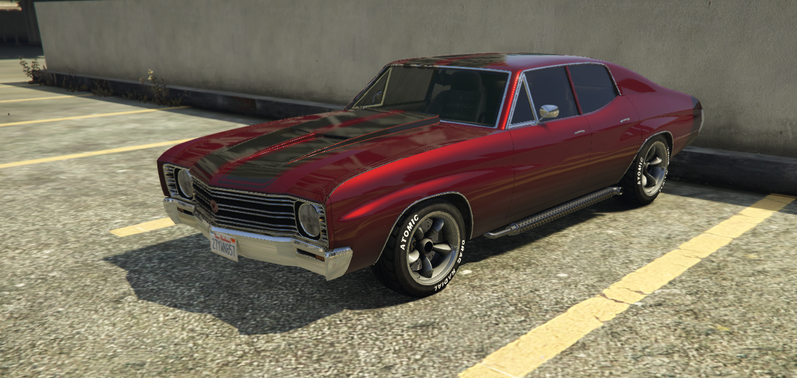
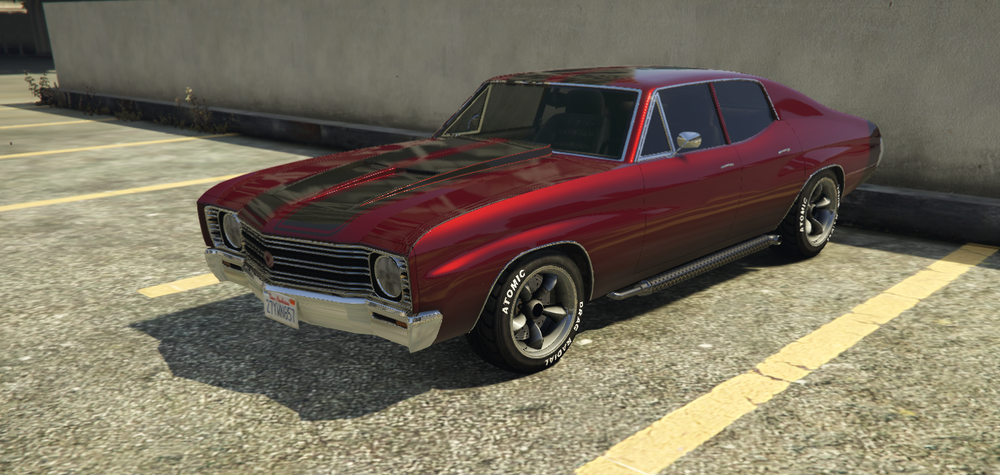
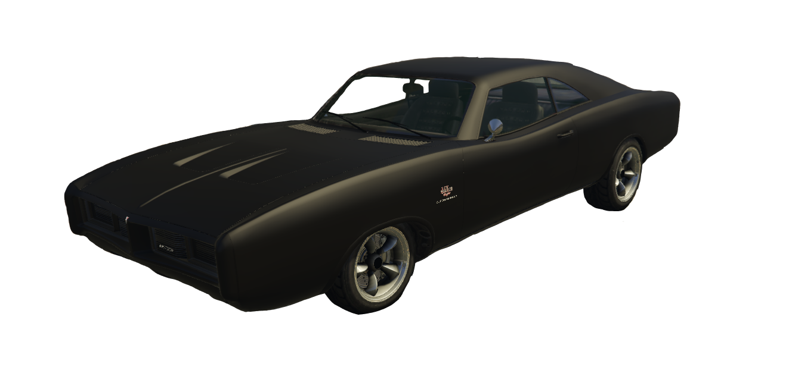
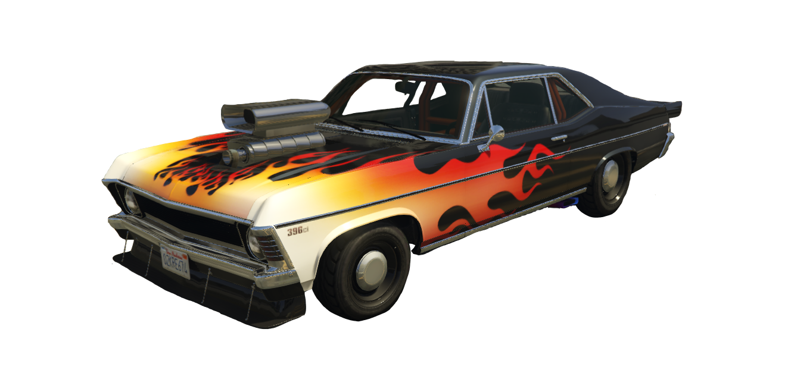
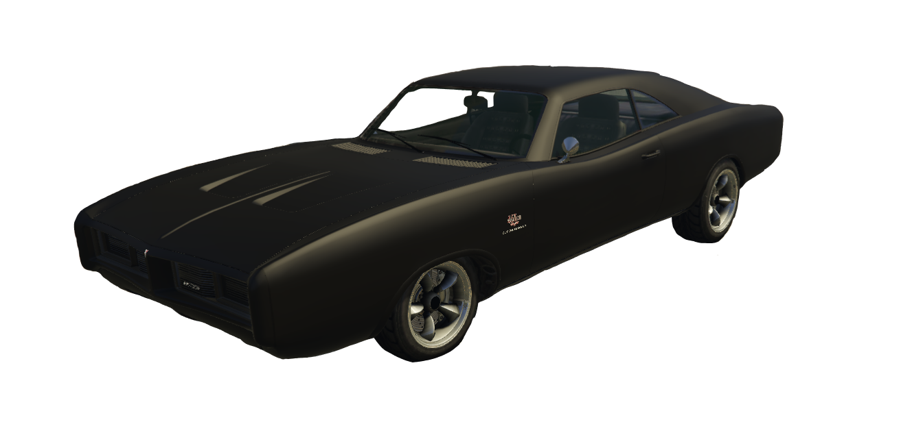
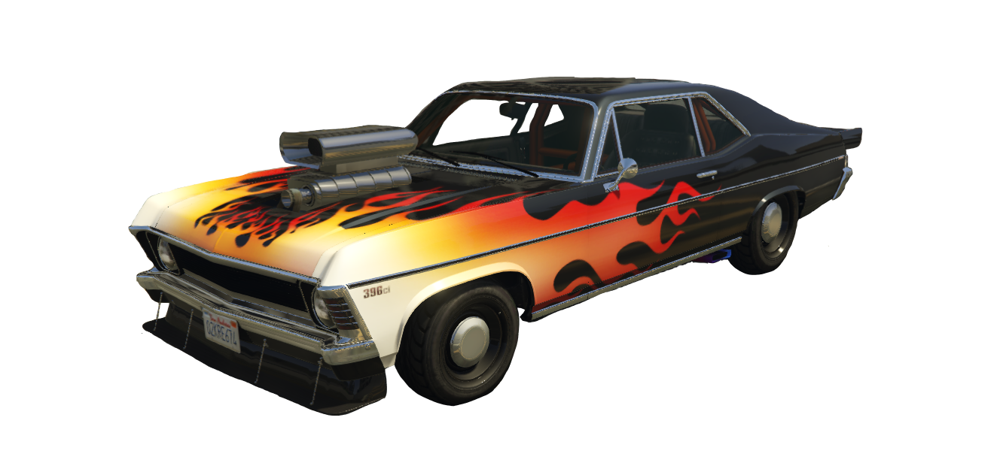

1972 Chevrolet Chevelle Malibu 4 Door “Apogee” Başlangıçta mütevazı bir inline-six motorla yola çıkan bu dört kapılı Malibu, artık tam anlamıyla bir sokak efsanesine dönüştü. Kaputun altında, stok motorun yerini alan 396 cid Big Block V8, yüksek tork değerleri ve agresif güç çıkışıyla her devirde “ben buradayım” diyor. Gücü yere sorunsuz aktarmak için şanzıman tamamen yenilendi ve aktarma organları güçlendirildi. Özel tasarlanmış yandan çıkışlı egzoz sistemi, hem motorun nefesini açıyor hem de Apogee’nin karakterine yakışan sert bir ton veriyor. Havalandırmalı kaput, motorun yüksek ısı altında bile rahat çalışmasını sağlarken, görsel olarak da araca ayrı bir kimlik kazandırıyor. Yenilenmiş yakıt ve soğutma sistemleri, radyatör ve bağlantı hatları, uzun süreli yüksek performans kullanımına uyum sağlayacak şekilde revize edildi. Çift siyah şeritli livery, klasik muscle car ruhunu korurken, boyanın altındaki detaylı kaporta işçiliği Apogee’yi diğerlerinden ayırıyor. Güç, stil ve kişisel dokunuşun mükemmel dengesi Apogee, garajın imzasını taşıyan ilk ve en gurur verici işlerden biri..

 


